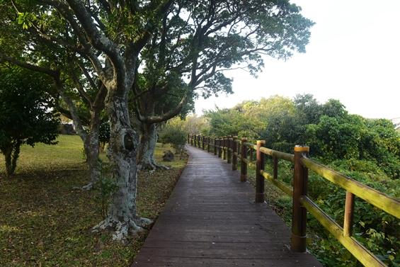

별내린전망대
#제주도 #별내린전망대 #전망대 #경관
insta
map
매일 09:00 - 20:00
064-739-1330
별내린전망대는 천제연 계곡 하천에 있는 포구의 옛 이름인 성천포(星川浦)의 순 우리말 이름이며 아름다운 주변 경관을 조망할 수 있는 최적의 장소다.
한라산 전망대는 한라산 등성이를 휘돌아 내려오는 바람이 천제연 계곡에 머물다 성천포를 통해 바다로 휘돌아 나가면서 한라산의 봄, 여름, 가을, 겨울 소식을 전해주는 바람과 그리움의 전망대이다.
이 두 전망대는 여름 밤 선녀가 몰래 내려와 노닐었다는 천제연 계곡〈천연기념물 제 182－7호 지정〉과 이를 형상화 한 선임교 그리고 담팔수 나무〈지방문화재 제 3－14호 보호〉의 가치를 높이고 천제연 주변 관광지를 명소화하기 위하여 만들어 졌다
이 두 전망대는 여름 밤 선녀가 몰래 내려와 노닐었다는 천제연 계곡〈천연기념물 제 182－7호 지정〉과 이를 형상화 한 선임교 그리고 담팔수 나무〈지방문화재 제 3－14호 보호〉의 가치를 높이고 천제연 주변 관광지를 명소화하기 위하여 만들어 졌다
제주 서귀포시 색달동 2938-1